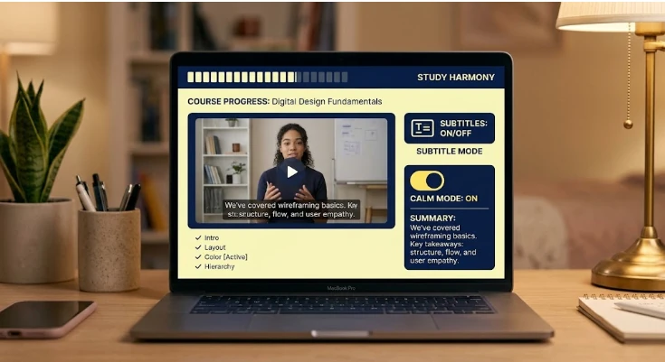

Habilidades profissionais
Conteúdos técnicos para desenvolver competências e se preparar para diferentes caminhos profissionais.
Formação profissional acessível
Formação para pessoas autistas e com TDAH, com respeito ao seu ritmo de aprendizagem.

Instruções confusas, pressa e um único jeito de ensinar podem dificultar a aprendizagem. Aqui, seu ritmo é respeitado.
A proposta Pluralis
Conteúdos técnicos para desenvolver competências e se preparar para diferentes caminhos profissionais.
Organização, rotina e comunicação para trazer mais clareza ao dia a dia profissional.
Uma proposta que aproxima a formação de empresas e oportunidades do mundo do trabalho.
Formação online e presencial no Sudeste, com respeito ao ritmo de cada pessoa.
Desenvolva competências e estratégias para organização e comunicação no dia a dia profissional.
Aprenda uma profissão em uma escola feita para pessoas neurodivergentes.
O material disponível ainda não inclui depoimentos de alunos ou números verificados. Preferimos não publicar avaliações ou resultados inventados.
Para jovens e adultos autistas e com TDAH, a partir de 16 anos.
O preço ainda não está definido. O investimento da turma será divulgado antes de abrir inscrições.
Não. A formação desenvolve habilidades e busca aproximar estudantes e empresas, mas não garante contratação.
Conheça a proposta da Pluralis e descubra como construir, no seu ritmo, um caminho de aprendizagem e trabalho.
Venha participarVamos conversar?
Preencha seus dados para baixar o e-book da proposta Pluralis.